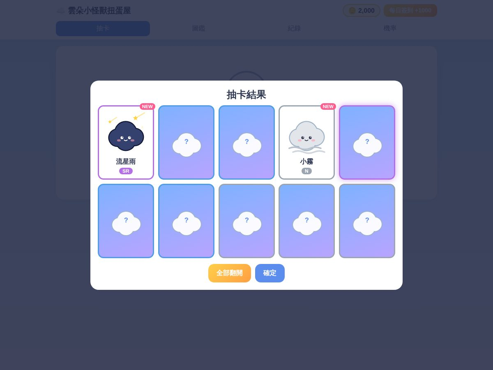
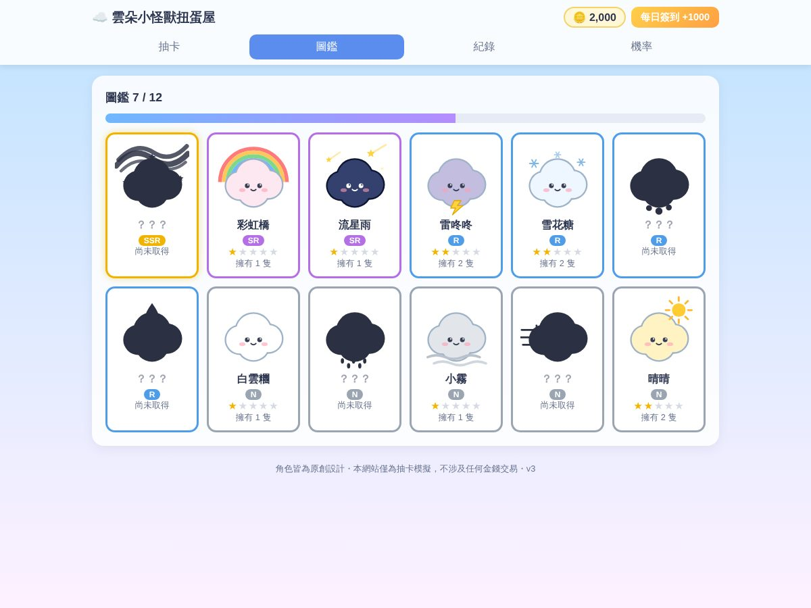

作業要做什麼
發想一個想做的 Web App，和 AI 討論出規格書，用 Vibe Coding 完成單一 index.html，並用 GitHub Pages 公開。
我做了什麼
- 原本想做吉伊卡哇抽卡模擬器，因為角色有版權，改成原創的「雲朵小怪獸」：12 隻由天氣變成的角色。
- 和 AI 討論規格書：N／R／SR／SSR 機率 55／30／12／3%、十連抽保底 R、60 抽保底 SSR、每日簽到、圖鑑剪影、自動存檔。
- v1 依規格書完成，用程式逐項測試驗收標準。
- v1 → v2：加入 SSR 煙火特效與圖鑑全收集獎勵。
- v2 → v3：十連抽改成翻牌揭曉、重複角色可以升星（最高 ★5）；測試時發現翻牌後 NEW 標籤樣式消失，請 AI 修正。
- 上傳 GitHub 時誤傳成 v2，檢查頁尾版本號才發現，重新上傳 v3。


結果與發現
- 扭蛋屋可以實際操作：抽卡、翻牌、圖鑑、紀錄與機率頁都正常，重新整理後進度仍保留。
- 先寫規格書再做，AI 做出來的東西比較符合想像；試玩之後才知道哪些地方值得加強。
- 上傳後一定要打開網站確認版本，不能只看檔名。
心得
一開始只想著要做吉伊卡哇，完全沒想到版權的問題，後來改成自己的雲朵小怪獸，反而更有自己的感覺。
v1 做出來我覺得已經很好了，但多玩幾次就發現十連抽一次全部攤開有點沒感覺，所以才加了翻牌和升星。上傳時還不小心傳成舊版，檢查才發現。就算程式不是自己寫的，想清楚要什麼、自己試玩、檢查有沒有出錯，這些還是只能自己來。
AI 協助說明
規格書提問、程式碼與三個版本的修改由 Claude 協助完成；選題、規格決定、試玩與修改方向、上傳 GitHub 由我完成；心得初稿由 Claude 依我的作業內容與執行結果草擬，我確認後採用。